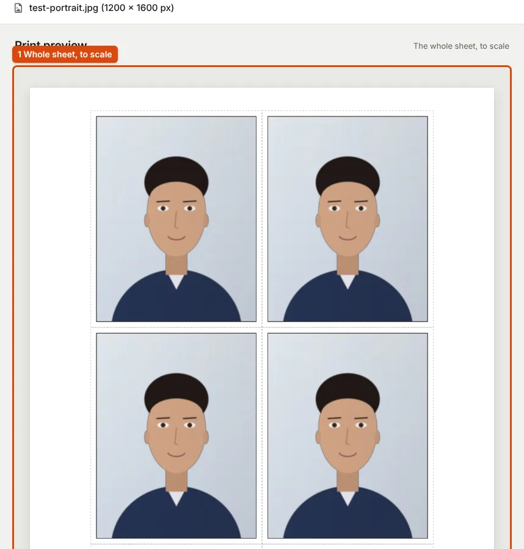

Aadhaar, PAN and Passport Photos: Who Takes the Photo and What Size It Must Be
For Aadhaar and most passport applications you do not supply a photo file at all. For the online PAN application you do, with tight limits. Here is what each issuing body says.
Three documents, three different answers
Aadhaar, PAN and the passport each handle the photo differently. For two of them you may not need to prepare a photo file at all. The summary below comes from the issuing bodies' own pages; each section quotes them.
| Document | Who provides the photo | What to prepare |
|---|---|---|
| Aadhaar (update) | Taken at an Aadhaar enrolment centre | No photo file. Book a centre visit for a photo or biometric update. |
| PAN, DSC-based online application | You upload it | Photo: JPEG, colour, 200 DPI, 3.5 × 2.5 cm, max 20 KB. Signature: JPEG, colour, 200 DPI, 2 × 4.5 cm, max 10 KB. |
| Passport, at a Passport Seva Kendra | Taken at the PSK | No photo. "Photograph is NOT REQUIRED" for applications submitted at a PSK or POPSK. |
| Passport, paper forms at other centres | You paste a print | A recent colour print, 4.5 cm × 3.5 cm, plain white background. |
Aadhaar: the photo is taken at a centre
UIDAI lists the facial photograph as biometric information, alongside iris and fingerprints: "Biometric Information Iris, Finger Prints and Facial Photograph" (UIDAI: Updating data on Aadhaar). Online updating covers the address: "The online mode offers address update to the Aadhaar number holders". Photo and biometric changes are made "with the help of an operator at an Aadhaar Enrolment Centre".
So there is no Aadhaar photo file to resize. What you may upload online is a supporting document for an address change, and UIDAI's page does not give a file size or format limit for it. The list of acceptable documents is on UIDAI's enrolment and updates page.
PAN: the online application with a digital signature
For the DSC-based online application (Forms 93 and 94 under the Income-tax Rules, 2026), Protean publishes a scan specification table (Protean: Guidelines for filling PAN New Application):
| Photograph | Signature | Supporting documents | |
|---|---|---|---|
| Resolution | 200 DPI | 200 DPI | 200 DPI |
| Colour | Colour | Colour | Black and white |
| File type | JPEG | JPEG | PDF/A or JPEG |
| Size | Max. 20 KB | Max. 10 KB | Max. 300 KB per page |
| Dimension | 3.5 × 2.5 cm | 2 × 4.5 cm |
At 200 DPI, 3.5 × 2.5 cm is about 276 × 197 px; enter the centimetres and 200 DPI in the resizer and it converts for you (how the conversion works). The table does not say which side of the photo is 3.5 cm or which side of the signature is 2 cm, so check the upload screen when you apply. Ten kilobytes is tight for a signature. At 354 × 157 px (4.5 × 2 cm at 200 DPI) our test signature was 11.3 KB at quality 0.95, so the resizer lowered the quality to 0.93 to reach 9.1 KB; cleaned with the signature cleaner first, it was 7.6 KB.
Protean's own article on scanned applications gives different figures (50 KB, 5 × 2.5 cm). This page follows the guideline page above, which is the one linked from the application route. Other PAN routes, such as UTIITSL's, did not publish a scan specification we could find.
Passport: usually no photo to bring
The Ministry of External Affairs' instruction booklet says: "Photograph is NOT REQUIRED for applications submitted at Passport Seva Kendra (PSK), Post Office Passport Seva Kendra (POPSK)" (Instructions for filling the passport application form). The photo is taken there.
For paper applications submitted elsewhere, the same booklet lists the rules for a pasted print, including:
- "recent passport size photograph (4.5 cm length x 3.5 cm width) in colour"
- "Background of the photograph should be plain white, and the dress should be in dark colour"
- "Frontal view of the full face should be visible"; "Head should be in the centre of the frame and both ears should be visible"
- "Photograph in computer print will not be accepted"; "Photograph is NOT to be signed"; "Photographs cut from group photographs are not acceptable"

Because a computer print is not accepted, have these copies printed at a photo lab. Our passport photo print tool lays out 3.5 × 4.5 cm copies on a 4 × 6 inch or A4 sheet at 300 DPI, ready to take to one. For taking the photo itself, see taking a passport-size photo at home.
What we could not verify
Many websites give pixel sizes for an "ICAO-compliant" passport upload (for example 630 × 810 px) or an Aadhaar photo spec. We could not find these on passportindia.gov.in or uidai.gov.in, and the ICAO's own documents did not load for us, so this page does not repeat them. If you are applying through an Indian mission abroad, use the photo rules on that mission's site.
Sources
- UIDAI: Updating Data on Aadhaar, last updated 17 September 2026
- UIDAI: Enrolment & Updates
- Protean: Guidelines for filling PAN New Application (DSC-based online application)
- Ministry of External Affairs: Instructions for filling the passport application form and supplementary form, booklet V3.0
- Library of Congress: PDF/A family, the format PAN accepts for supporting documents
Measurements on this page come from running ApplyReady's own tools on the synthetic test images described in the editorial policy. Found a mistake? Report an error.